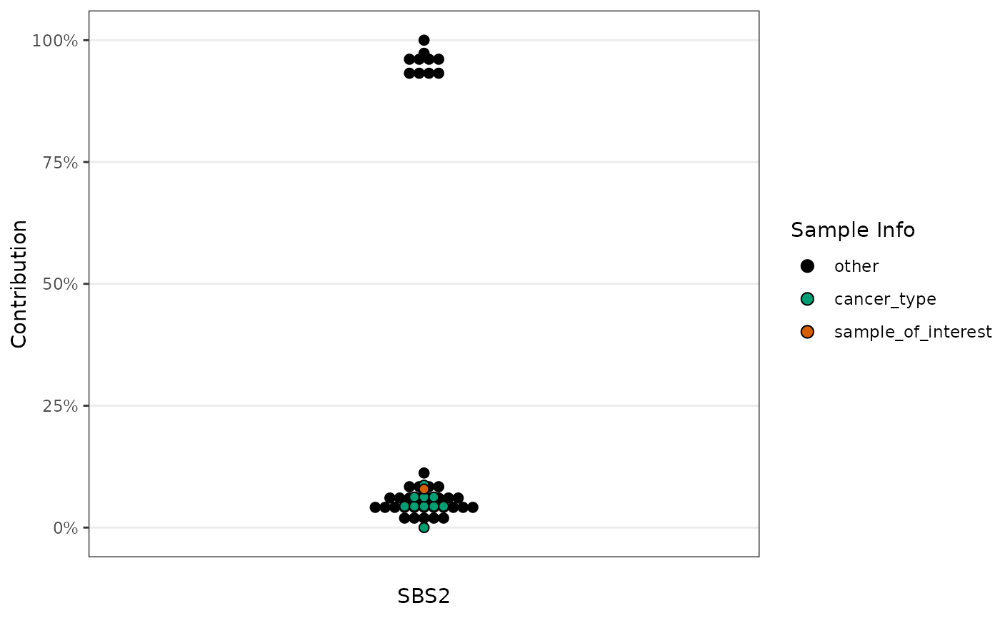

Generate Example Data for Dot Plot Visualization
Source:R/sig_visualise_dotplot.R
example_dotplot_data.RdThis function generates an example dataset to be used with sig_visualise_dotplot.
It returns a data frame containing sample identifiers, their contributions, and sample group information.
Value
A data frame with 50 rows and 3 columns:
sampleCharacter vector of sample identifiers (e.g., "Sample1", "Sample2", etc.).
contributionNumeric vector of contributions ranging from 0 to 1.
sample_infoCharacter vector indicating the group each sample belongs to ("sample_of_interest", "cancer_type", or "other").
Examples
dotplot_data <- example_dotplot_data()
sig_visualise_dotplot(
dotplot_data,
col_sample = "sample",
col_contribution = "contribution",
col_fill = "sample_info",
palette_fill = c(sample_of_interest = "#D55E00", "cancer_type"="#009E73", "other" = "#000000"),
sort_by = "palette_fill",
xlab = "SBS2"
)
